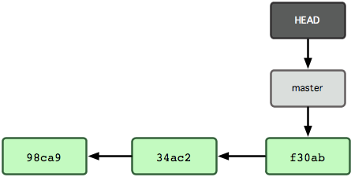

Practical Git
Kristján Pétursson
- Developer at Singly.com
- kristjan@gmail.com
- k@singly.com
- alt+e
github.com/kristjan
Who are you people?
Raise your hand. Down if you use git every day / week / never?
Ask Questions
Also, what do you want to know?
Recommended Reading
Git!
- man git
- git help
- git help *
Scott Chacon
github.com/schacon
schacon wrote it. It's free!

git-scm.com/book
GitHub
- help.github.com
- github.com/defunkt/hub
When it's hard, cheat
cheat.errtheblog.com/s/git
Terminology
Working Tree
What your files look like now, while you're coding.
Staging Area
a.k.a. Index
A holding tank where you can prepare a commit.
Repository
Once something is in the repository, it's very hard to lose. Demo: Create a new file; commit "A" to it; stage "B"; edit it to "C".
All the snapshots Git has of your project.
Structure
Git is a tree
Actually a collection of trees with a lot of metadata; not going to go
into that
$ git log --all --graph --pretty=format:'%s'
* Leaf
* Branch
| * Leaf
| * Branch
| * Branch
| | * Leaf
| |/
|/|
* | Branch
|/
* Trunk
| * Leaf
| * Branch
| * Branch
|/
* Trunk
* Dirt
Contains Tree, author/committer, timestamp, message
Your tree is made of Commits
commit f1e97a5d20564f66ad6d27befa5573f7760f85f8
Author: Kristján Pétursson <kristjan@gmail.com>
Date: Mon Oct 29 02:37:24 2012 -0700
Recommended Reading section
diff --git a/recommended/recommended.md
b/recommended/recommended.md
new file mode 100644
index 0000000..3b5433a
--- /dev/null
+++ b/presentation/recommended/recommended.md
@@ -0,0 +1,39 @@
+!SLIDE
+
+# Recommended Reading #
+
...Demonstrate the commit lifecycle: Unstaged -> Staged -> Committed
Committing
$ touch foo
$ git add foo
$ git status
# On branch master
#
# Initial commit
#
# Changes to be committed:
# (use "git rm --cached <file>..." to unstage)
#
# new file: foo
$ git commit
".git/COMMIT_EDITMSG" 12L, 288C written
[master 6e62099] Committing Foo
0 files changed
create mode 100644 foo
$ git status
# On branch master
nothing to commit (working directory clean)
Committing

Where does this stuff go?
$ tree -L 2 .git
.git
├── COMMIT_EDITMSG
├── HEAD
├── ORIG_HEAD
├── config
├── description
├── hooks
│ ├── ...
├── index
├── info
│ └── exclude
├── logs
│ ├── HEAD
│ └── refs
├── objects
│ ├── 02
│ ├── 03
│ ├── ...
│ ├── info
│ └── pack
├── refs
│ ├── heads
│ ├── remotes
│ └── tags
└── rr-cache
HEAD
Points to where you are in the tree

HEAD is more interesting when there's more than one branch
HEAD
Points to where you are in the tree

HEAD
git checkout testing

HEAD
git commit ...

Lives in .git/HEAD
$ cat .git/HEAD
ref: refs/heads/master
$ cat .git/refs/heads/master
4f6a62b56396617d0894d7049e1da3dd59e4aa1c
$ git log -1
commit 4f6a62b56396617d0894d7049e1da3dd59e4aa1c
Author: Kristján Pétursson <kristjan@gmail.com>
Date: Mon Oct 29 03:01:19 2012 -0700
Don't screw with .git/head
git checkout moves HEAD
git checkout testing

.
git checkout foo has the implicit argument HEAD
git checkout actually updates files in your working tree to match the version
in the tree you specify. If you give no paths (ie, update everything), you're in
a state indistinguishable from that tree.
This is one of the few things that can destroy data
git checkout sometimes moves HEAD
$ git status
# On branch master
# Changes not staged for commit:
# (use "git add <file>..." to update what will be committed)
# (use "git checkout -- <file>..." to discard changes in working directory)
#
# modified: foo
#
no changes added to commit (use "git add" and/or "git commit -a")
$ git checkout foo
$ git status
On branch master
nothing to commit (working directory clean)
git reset moves HEAD
$ git log --oneline
53524cf Change foo's content # "Bar"
101ba32 Give Foo content # "Foo"
6e62099 Committing Foo # Empty
$ git reset 101ba32
Unstaged changes after reset:
M foo # "Bar"
$ git log --oneline
101ba32 Give Foo content # "Foo"
6e62099 Committing Foo # Empty
$ git diff
diff --git a/foo b/foo
index bc56c4d..ebd7525 100644
--- a/foo
+++ b/foo
@@ -1 +1 @@
-Foo
+Bar
git reset is dangerous
$ git reset --hard 101ba32
HEAD is now at 101ba32 Give Foo content
$ git log --oneline
101ba32 Give Foo content # "Foo"
6e62099 Committing Foo # Empty
$ git status
# On branch master
nothing to commit (working directory clean)
git reset sometimes moves HEAD
$ git log --oneline
53524cf Change foo's content # "Bar"
101ba32 Give Foo content # "Foo"
6e62099 Committing Foo # Empty
$ cat foo
Bar
$ git reset 101ba32 foo
Unstaged changes after reset:
M foo # "Bar"
$ git log --oneline
53524cf Change foo's content # "Bar"
101ba32 Give Foo content # "Foo"
6e62099 Committing Foo # Empty
$ cat foo
Bar
git reset can also change the Index
$ git status
# On branch master
# Changes to be committed:
#
# modified: foo
#
# Changes not staged for commit:
#
# modified: foo
$ git diff --cached
diff --git a/foo b/foo
index ebd7525..bc56c4d 100644
--- a/foo
+++ b/foo
@@ -1 +1 @@
-Bar
+Foo
$ git diff
diff --git a/foo b/foo
index bc56c4d..ebd7525 100644
--- a/foo
+++ b/foo
@@ -1 +1 @@
-Foo
+Bar
reflog to the refcue
$ git reflog
53524cf HEAD@{0}: reset: moving to 53524cf
101ba32 HEAD@{1}: reset: moving to 101ba32
53524cf HEAD@{2}: reset: moving to 53524cf
101ba32 HEAD@{3}: reset: moving to 101ba32
53524cf HEAD@{4}: reset: moving to ORIG_HEAD
6e62099 HEAD@{5}: reset: moving to 6e62099
53524cf HEAD@{6}: commit: Change foo's content
101ba32 HEAD@{7}: commit: Give Foo content
6e62099 HEAD@{8}: commit (initial): Committing Foo